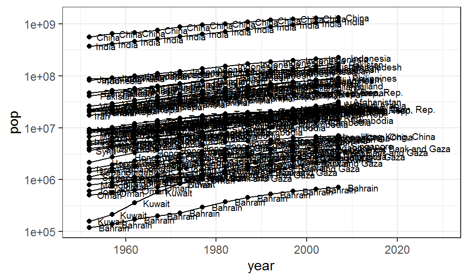
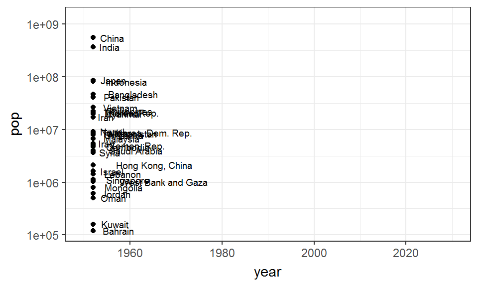

2021- By Gen-Chang Hsu. Built with  distill.
distill.
distill.Visualizing multi-dimensional and dynamic data can be challenging. In this post, I will show how you can better communicate these features with interactive plots and animations.
From the host: Here comes the first guest post by William Ou! In this post, he will show you how to attractively visualize the data using interactive plots and animations. This is a rather long post, but fear not, I promise you will find it interesting, and most importantly, your data visualization skills will LEVEL UP!
Arguably the biggest challenge in data visualization is the fact that we live in a multi-dimensional and dynamic 1 world. Our 3D perception of the universe is an obvious case in support of the multi-dimensions part (all we need is more than 1-dimension!). You might argue that some things are in fact static though. But! If you look closely enough, everything in the physical world is dynamic, constantly moving and fluctuating in space and time. The screen on your computer may look static but its actually constantly emitting light. Even the wall in your room is made up of particles that are constantly moving. Yet, despite the ubiquity of multi-dimensionality and dynamical behaviors, a large amount of the information we acquire today comes in the standard 2D and static format: the book or Wikipedia page youre reading, youre Facebook feed, magazines etc.. Although there are ways of representing dynamic and multi-dimension features in 2D static mediums, doing so often distorts the original information and can hinder the essence of the message that one wishes to convey. In many cases, deciphering distorted information requires practice and prior knowledge which renders the information accessible to only a few selected individuals. To demonstrate my point, consider the 2 ways of visualizing the Palmer Penguins dataset below:
If youve learned PCA before, you might have no problem interpreting Approach 1. But if you havent, you might be wondering: What the **** is a PC1/PC2? What are the units of the axes? Why are there arrows pointing at different directions? What does a single point even represent? Most importantly, where did my penguins go!? Because the focus of this post is not about statistics, I wont go into the details of explaining what a PCA is. What I do want to point out though, is how we can visualize data in a more accessible manner.
Now, Approach 2 may also look like a handful. However, if you take a deep breath and carefully examine the plot, anyone would be able to interpret it, even without any background (assuming that they can read English, of course)! Upon closer inspection, youll see that each point in the figure is made up of 4 variables: 1. Bill length (mm), 2. Bill depth (mm), 3. Flipper length (mm), and 4. Body size (g). All these variables characterize an individual penguin (a penguin is multi-dimensional!). The 4 variables are represented by 3 axes and a color gradient. The reason why we do not have a 4th axis is because our brain is not programmed to think that way, so the 4th variable is represented as a color gradient instead. An important thing to note is that, these points on the plot show exactly what the data says. Nothing is distorted and its as raw as it can be. One cool feature of this plot is that it is interactive. Although our screen is 2D, we can get a better feel of the dimensionality by rotating the axes around. Rotating works by dragging the plot around with your cursor. By doing so, well see that at certain angles, the points look like a big cloud while at other angles you can see a clear separation between clusters of points. Try playing around with the plot, explore its features, and see if you can find other ways of visualizing your data.
Now lets take a look at some ways to visualize dynamic variables, variables that change over time. Gapminder is a foundation founded by Hans Rosling that aims to highlight common misconceptions about global trends with data. The gapminder package in R provides a subset of its dataset. Lets look at how life expectancy and GDP of each country changes over time (year).
For the dynamics example, the two figures above are actually identical. The only difference is that the animation shows how the state variable (in this case, life expectancy) develops over time by revealing each data sequentially as time progresses. Animations are particularly helpful for visualizing time-series data with multiple variables because things can get cluttered really fast when lines are drawn to represent the passage of time. Although the animated version also shows a lot of cluttering towards the end, it doesnt necessarily impede understanding because the viewer already has a sense of where each point came from.
The gapminder dataset is the perfect example that demonstrates the power of good data visualization! If you havent already, I strongly encourage you to check out the seminal TED talk and this BBC trailer by Hans Rosling, the OG of descriptive and exploratory data analysis.
Lets go over some simple examples to see how you can make your own interactive plot with plotly and animation with gganimate. Both of these packages have really good documentation and you can find out more about them on their websites: plotly and gganimate
Well use the mtcars dataset here as an example. Make sure to have the plotly package installed on your computer.
The plotly package is built to be compatible with tidyverse with both sharing very similar syntax. Just as ggplot() is to ggplot2, the main engine of plotly plots is the function plot_ly(). Again, very similar to ggplot2, we supply the plot_ly() function with our data frame and the variables we would like to plot.
Well start by loading the package(s) first, and tweak the dataset a little bit prior to plotting. Here, we will treat # of cylinders as a factor instead of a integer value for visualization purposes.
Again, very similar to ggplot(), we supply the plot_ly() function with the data that we want to plot and specify the axes which would be x, y, and z since we have a 3rd dimension. Note the small differences in how the variables are defined here. In plot_ly() the variables are defined with the ~ (tilde), which is like what you would normally do when defining a linear model (e.g.lm(y ~ x1 + x2)). In addition, well also specify a 4th variable/dimension as the color of the points.
mt_plotly <- plot_ly(data = mtcars_new, x = ~wt, y = ~hp, z = ~qsec,
color = ~cyl)
mt_plotly
And there you have it! Pretty straightforward, right? But if youre picky, you might not be satisfied with this and want to tweak it some more. So lets try to edit the axis labels, since theyre all abbreviated and have no units. Through the following code, youll start seeing more tidyverse/ggplot2 style elements of the plot_ly syntax, see if you can spot them!
mt_plotly %>%
layout(title = 'Motor Trend Car Road Tests',
scene = list(xaxis = list(title = 'Weight (1000lbs)'),
yaxis = list(title = 'Horsepower (hp)'),
zaxis = list(title = 'Quarter mile time (s)')),
annotations = list( # This section is hard-coded
x = 1.13,
y = 1.05,
text = '# of Cylcinders',
showarrow = FALSE))
Yes, plot_ly functions are pipeable! The piping here is analogous to + in ggplot2 syntax. The layout() is also much like the theme() in ggplot2. I will admit though, plot_ly takes time to get used to. The arguments that functions take are sometimes not as straightforward, for example, when does it need to be a list() and when does it not? Moreover, the legend title for the color scheme is hard-coded because there is no argument for specifying legend titles at the moment (at least to my knowledge).
So, in summary, I think plot_ly offers a neat way of visualizing complex data. The interactive aspect can also help make data more accessible and can be a handy pedagogical tool. However, if youre trying to make a figure to publish in a scientific journal, this is probably an overkill.
Because gganimate is a part of the tidverse/ggplot2 ecosystem, it should be very straightforward if you are already with familiar with either of them. The general schema of making an animation with gganimate is to:
Create a ggplot object with ALL your points plotted out.
Decide how you would like the points to be animated by specifying how you would like the data to be shown over time. In the case of time-series, the time variable will be the index of your animation.
Choose an appropriate transition function from gganimate, input your index variable (e.g.time), and simply overlay (+) this call to your ggplot object just as you would with adding geom_point(), geom_line(), theme()
THATS IT!
As you can imagine, animations take a little time to render. So for the sake brevity, Ill use only a subset of the gapminder dataset.
Lets ggplot it out:
asia_p <- gapminder_asia %>%
ggplot(aes(x = year, y = pop, group = country)) +
geom_point() +
geom_path() +
geom_text(aes(label = country), hjust = -0.3, size = 2.5) +
scale_y_log10() +
xlim(1950, 2030) +
theme_bw()
asia_p

This looks horrible, doesnt it? But this is what I meant by plot it all out. This will become clearer through the animation process though, since the points and texts of each country will only appear once at each time point. Because the line specified by geom_path is continuous (only 1 line per group), it will only grow as time progresses. In other words, each country will only have a single line, a single point, and a single text throughout the animation.
To make the plot an animation, simply choose an appropriate transition function from the gganimate package and add it to your ggplot. But what the heck is a transition function? Transition functions are the functions the allow you to specify how you want your plot to be animated. In most cases, all you need to provide to the function is the variable from your dataframe in which you want the animations to be indexed. For example, if we want the animations to progress over time, then we want the time-indexed variable to be our argument. Here, well use the transition_reveal() function as our transition function since we are trying to visualize the temporal evolution of population size.
asia_p + transition_reveal(year)

As its name suggests, transition_reveal() works by gradually revealing your data. The video/gif you see is really just a combination of multiple frames, and each frame consists of only data from a given year. The order of appearance is dependent on the order of your index variable (in our case, year). In some cases, it might not be time that you want to animate and a continuous animation might not be the essence that you want your plot to communicate. Finding the correct transition function ultimately depends on the message that you want to convey.
I started off by suggesting to you that 2D static plots can sometimes limit our ability to communicate the story of our data. This is because our world is multi-dimensional and dynamic! I then showed you that we can overcome some of these limitations by creating I. Interactive plots that allow you to rotate axes, thereby giving the perception of depth, and II. Animations that captures the passage of time.
Through this post, I hope I, at least slightly, highlighted the pedagogical implications of making intuitive and accessible data through thoughtful visualizations. So there you have it! May you live long and prosper
William Ou is an ecologist broadly interested in complexity science, eco-evolutionary dynamics, and more recently, cognitive psychology. When not sciencing, he enjoys biking around the city, eating ice cream, making generative art with ggplot, and watching netflix. Check out his website to learn more!
If you see mistakes or want to suggest changes, please create an issue on the source repository.
distill.